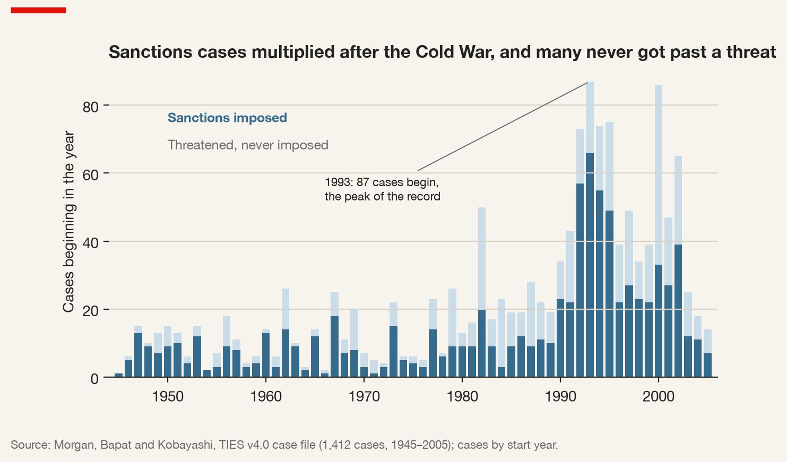
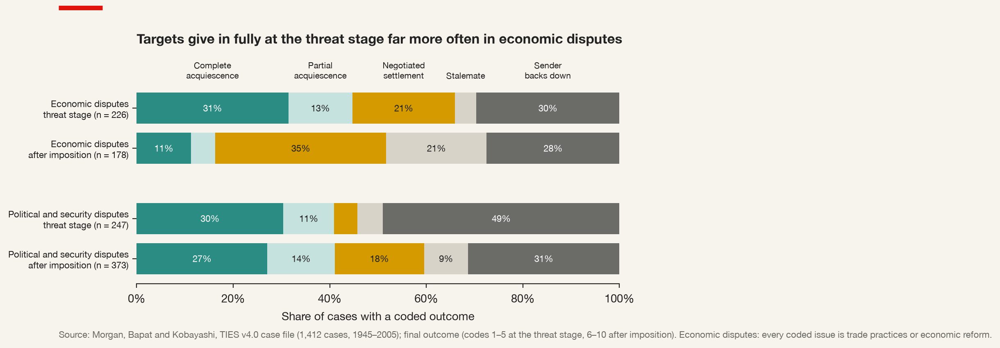
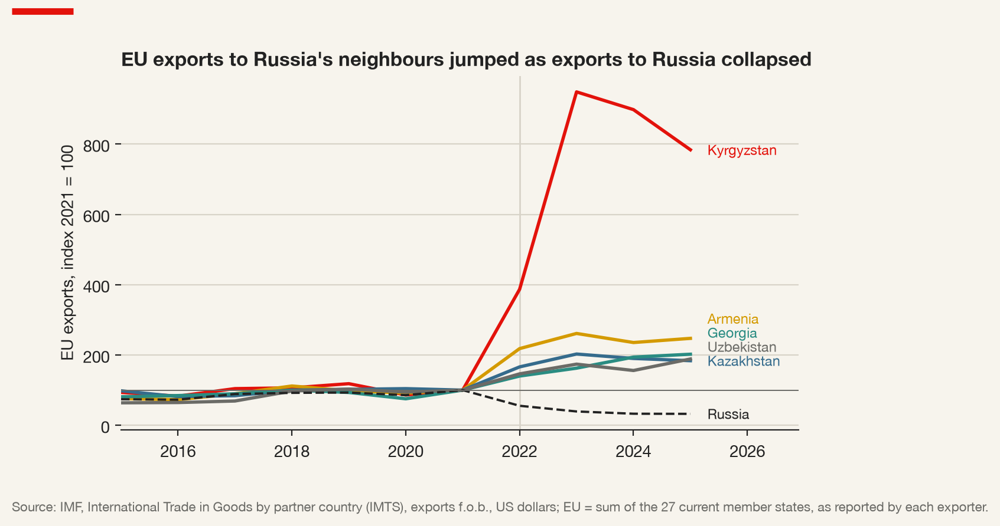
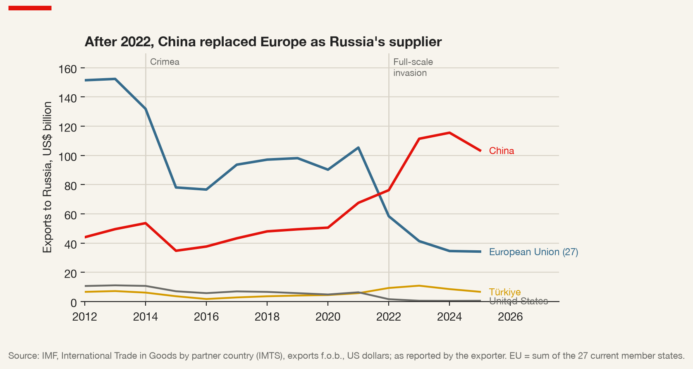
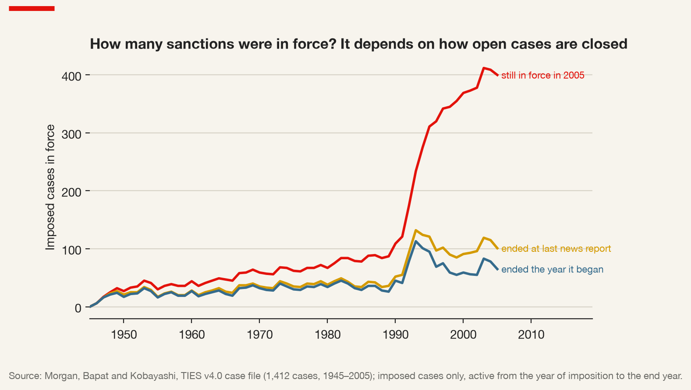

10 Economic Sanctions: Do They Work, and Whom Do They Hit?
10.1 The instrument of first resort
When a government wants to do something about a foreign state’s behaviour and is not prepared to go to war over it, the menu is short. It can protest, which costs nothing and changes nothing. It can withdraw an ambassador, which is visible and mostly symbolic. Or it can impose economic sanctions: restrict what its firms and banks may sell to, buy from, lend to or invest in the offending state, its government, its companies or its leading citizens. Over the last three decades the third option has moved from the end of the menu to the top. Sanctions are now what governments reach for first, in response to invasions and coups, nuclear programmes and election interference, human-rights abuses and cyberattacks. The Global Sanctions Data Base documents both the rise in the number of active cases since the end of the Cold War and the change in what those cases are made of (Felbermayr et al. 2020).
This chapter asks whether the instrument is an efficient mechanism for regulating geopolitical risk — a way of raising the cost of aggression without the cost of war — or a source of it. The two are not mutually exclusive, and the argument here is that, for a multinational, the second matters more than the first. A firm does not need to know whether the sanctions on a given state will achieve their political goal. It needs to know whether they will cut it off from a customer, a supplier, a bank or an asset; how far the effective perimeter of the measures extends beyond their legal text; and what the target can do to it in return.
Economic sanctions — restrictions on economic relations imposed by one or more senders on a target — a state, a government, a firm or an individual — in order to change its behaviour, weaken it, constrain what it can do, or signal disapproval. The instrument is the restriction; the objective is political.
The definition’s last clause lists four objectives, and the answer to “do sanctions work?” depends on which of them the instrument is held to. A measure that fails to change a regime’s policy may still succeed in making its weapons programme slower and more expensive, or in telling allies and voters at home that something has been done. Much of the disagreement in the literature comes from asking the same question of cases that were never trying to do the same thing.
10.2 A very old weapon
Economic coercion is older than the states that now practise it. Thucydides records the Megarian decree, by which Athens barred the merchants of Megara from the harbours of its empire, among the grievances that preceded the Peloponnesian War; Napoleon’s Continental System tried to defeat Britain by closing the continent to British trade, and was undone by smuggling and by the costs it imposed on France’s own allies. Both contain, in miniature, the problems this chapter returns to: sanctions hurt the sender’s own merchants, invite evasion through third parties, and have uncertain political effects.
The modern idea — sanctions as an organised, collective alternative to war — dates from the League of Nations. Article 16 of its Covenant obliged members to sever trade and financial relations with any member that resorted to war in breach of its commitments. The idea was tested once, and the test is the founding case of the literature.
From the archive · The League of Nations and Italy, 1935
Italy invaded Ethiopia in October 1935. Within days the League’s Council found that Italy had resorted to war in breach of the Covenant, and the members agreed a package of measures that came into force in November: an arms embargo, a ban on loans and credits to the Italian government, a ban on imports of Italian goods, and an embargo on the export to Italy of a list of raw materials.
What was left off the list mattered more than what was on it. Oil was not embargoed; nor were coal and steel, and the Suez Canal, through which Italy supplied its army in East Africa, stayed open. The great powers feared driving Italy into Germany’s arms, and the United States was outside the League. Italian forces took Addis Ababa in May 1936, and the League lifted the sanctions in July.
The lesson drawn at the time was that collective sanctions had failed. The lesson worth drawing now is subtler. The senders wanted to be seen to act while protecting their own interests, and the gap between the announced objective and the instrument deployed was visible to everyone, including the target. Every later debate about whether sanctions “work” is, in part, a debate about whether the measures studied were ever designed to.
The United Nations Charter, drafted a decade later, put the idea on a firmer legal footing: Article 41 allows the Security Council to decide on “measures not involving the use of armed force”, including the “complete or partial interruption of economic relations”, and makes them binding on all members. For most of the Cold War the veto kept the provision almost idle. The Council imposed mandatory sanctions on Southern Rhodesia after its unilateral declaration of independence in 1965 and an arms embargo on South Africa in 1977, and little else. Sanctions in this period were overwhelmingly unilateral and American. The end of the Cold War unblocked the Council, and the 1990s became the “sanctions decade”.
10.3 Four ways to describe a sanction
Before anything can be counted it must be classified, and classification embeds a theory of what sanctions are for. Four dimensions are useful, and the GSDB codes three of them directly.
The sender may be one state acting alone, a group of states acting together — the European Union is the most important plurilateral sender, its measures adopted by unanimity in the Council — or the United Nations Security Council, whose decisions bind every member. The distinction tells a firm how many jurisdictions it must satisfy and how much room a competitor from a non-sending state has to take its place.
The type describes the instrument: restrictions on trade (exports, imports, or both, partial or complete), on finance (loans, investment, payments, asset freezes), on travel, on arms, on military assistance, and a residual category. The GSDB records each as a separate indicator, so a single case can be of several types at once — which is why any stacked count of cases by type exceeds the number of cases.
The scope distinguishes measures aimed at a whole economy from measures aimed at named persons, entities or sectors.
Comprehensive versus targeted sanctions — comprehensive sanctions restrict all, or nearly all, economic relations with a target country; targeted or “smart” sanctions restrict relations only with named individuals and entities (asset freezes, travel bans), with specific sectors (energy, finance, defence), or in specific goods (arms, dual-use items, luxury goods). The distinction is about who is meant to bear the cost.
The objective is what the sender says it wants. The GSDB distinguishes changing a policy, destabilising a regime, resolving a territorial conflict, preventing a war, ending one, fighting terrorism, protecting human rights and restoring or defending democracy. Many cases have more than one, and the stated objective is not always the real one. A sender that announces “policy change” may be content with “punishment”, and one that announces “democracy” may care more about signalling to its own electorate. Coders work from the public record, so the objective variable is a record of what senders said, not of what they wanted.
10.4 Do they work? Coding success
The modern empirical literature begins with one book in three editions. Gary Clyde Hufbauer and Jeffrey Schott, later joined by Kimberly Ann Elliott and Barbara Oegg, assembled every sanctions episode of the twentieth century they could document and asked of each a question that sounds simple: did it succeed (Hufbauer et al. 2007)?
Their answer to the problem of defining success has become the field’s reference point, so it is worth stating precisely. Each episode is scored on two components. The first is the policy result: how far the outcome the sender sought was actually achieved, on a scale from failure to success. The second is the contribution of sanctions: how far the sanctions, as opposed to other factors — military force, a change of government for unrelated reasons, a negotiation that would have happened anyway — contributed to that outcome. Each component is scored from 1 to 4, and the two are multiplied into a success score. A case counts as a success when the product reaches 9 or more: that is, when the outcome was at least partly achieved and sanctions made at least a modest contribution to it.
Sanctions success (Hufbauer et al.) — an episode in which the sender’s policy goal was at least partly achieved and sanctions made at least a modest contribution to that achievement, operationalised as a product of the two scores, each from 1 to 4, of 9 or more. Success is a joint judgement about an outcome and a cause.
On this definition, roughly a third of the episodes in the study count as at least partial successes. The rate varies systematically with the circumstances. Sanctions succeed more often when the goal is modest — the release of a prisoner rather than the overthrow of a regime — when the target is economically small and weak relative to the sender, when target and sender were previously on friendly terms and trade heavily, and when the measures are imposed quickly and decisively rather than ratcheted up slowly, giving the target time to adapt. They succeed less often when the goal is major, when the target is an adversary, and when the target can turn to other suppliers and buyers.
That last condition was formalised by Bryan Early as sanctions busting: third countries whose firms step into the trade the sanctions forbid, for profit or for strategic reasons, and so supply the target with the alternatives that make resistance affordable (Early 2015). It is the reason multilateral sanctions are not straightforwardly more effective than unilateral ones. The more senders there are, the fewer alternatives remain for the target, but the harder it is to agree on anything strong, and the more likely the package resembles the League’s of 1935.
The “about a third” figure appears in policy debates as a fact about the world. It is nothing of the kind. It is a fact about one coding of one set of cases, produced by one team’s judgements on two four-point scales, and changing any of those three elements changes the number.
10.5 Pape’s audit, and why the debate never closed
The most consequential demonstration of this came from Robert Pape, who in 1997 went back through the cases Hufbauer and his colleagues had counted as successes in their second edition and asked whether each one survived scrutiny (Pape 1997). His conclusion was that most did not. In many, he argued, force or its threat had done the work; in others the target had made no real concession, or none attributable to sanctions. By his reckoning only five of the forty claimed successes held up, and he concluded that economic sanctions rarely achieve major political goals and should not be expected to.
Elliott replied that the glass was half full rather than empty (Elliott 1998). Sanctions, she argued, had never been claimed to be a substitute for force in pursuit of major goals, and judged against the modest goals for which they are typically used they did better than Pape allowed; moreover, their record had improved as they were used more often in concert, after the Cold War. Pape answered that sanctions still did not work (Pape 1998). The exchange is usually remembered as a debate about effectiveness. It is better understood as a debate about coding: about what counts as a concession, how much a contribution must be, and what the counterfactual is.
The counterfactual problem is the deep one, and David Baldwin had set it out a decade earlier (Baldwin 1985). To say that sanctions failed is to say that some other instrument would have done better. If the alternative was war, a sanction that achieved nothing at little cost may still have been the better choice; if the alternative was diplomacy, a sanction that achieved a little at great cost may have been the worse one. Effectiveness, on Baldwin’s account, is always comparative and always relative to cost, and a success rate computed without reference to the alternatives answers a question no policymaker faces.
A second line of argument asks how sanctions are supposed to work, and finds the naive answer wanting. Johan Galtung, studying the sanctions on Rhodesia, described what he called the naive theory: economic pain causes political disintegration, which forces the government to comply (Galtung 1967). The Rhodesian evidence suggested the opposite. Pressure produced a rally around the government, a turn towards self-sufficiency, and domestic winners — smugglers, import substitutes, holders of scarce foreign exchange — with an interest in the sanctions continuing. Jonathan Kirshner later generalised the point: sanctions work, when they work, by changing the relative power of groups within the target, and their effect therefore depends on who inside the target bears the cost and who profits from it (Kirshner 1997).
The lesson for an analyst. “Do sanctions work?” has no answer independent of how a case, an objective and a success are coded, and of what the comparison is. Which objective counts when a case has several, whether cases under way enter the denominator, how large a contribution must be: each coding decision moves the share judged successful.
10.6 The cases we never see
There is a deeper problem with any success rate computed from imposed sanctions, and it was put most clearly by Daniel Drezner. His first book began from a puzzle: states impose sanctions most often on their adversaries, yet adversaries are the targets least likely to concede, because they expect future conflict and fear that any concession will be exploited; allies concede more readily, but are sanctioned less often (Drezner 1999). The second step of the argument concerns the threat (Drezner 2003). If a target that would concede does so as soon as sanctions are threatened, the episode ends before any measure is imposed. The cases that reach imposition are disproportionately those in which the target had decided to resist.
Selection effect of threats — the bias that arises when sanctions most likely to succeed do so at the threat stage and are therefore never imposed. Samples of imposed sanctions over-represent hard cases, so imposed sanctions look less effective than the instrument is. The most significant effects of economic coercion may be the ones that never appear in a list of sanctions.
The implication for measurement is direct. A dataset that records only impositions cannot estimate the effectiveness of the instrument, because it has selected its cases on a variable correlated with the outcome. This is the reason the Threat and Imposition of Economic Sanctions dataset exists. T. Clifton Morgan, Navin Bapat and their colleagues recorded threats as well as impositions, first for 1971–2000 (Morgan, Bapat, and Krustev 2009) and then, in an extended version, for 1945–2005 (Morgan, Bapat, and Kobayashi 2014). In TIES a case begins with a threat or an imposition, whichever comes first, and the dataset records whether sanctions were in fact imposed. A substantial share of its cases never were.
The selection argument also cuts the other way: imposition is a costly signal of the sender’s seriousness, and some of its effects may come from the signal rather than the pain. Neither effect can be read off a count of imposed cases. A dataset that records threats can at least show where the cases go.
10.6.1 What the record of threats shows
TIES contains 1,412 cases that began between 1945 and 2005. In 845 of them sanctions were eventually imposed; in the other 567 — two cases in five — the episode ended without any measure taking effect. Figure 10.1 shows when the cases began. The post-Cold War surge is there, as in every count of sanctions: 547 cases began in the 1990s, against 226 in the 1980s, and the single busiest year was 1993, with 87. The share that never got past a threat moves more than the total: a third in the 1950s and 1960s, more than half in the 1980s, a third again in the 1990s and almost half between 2000 and 2005. Counted by impositions alone, the 1980s look quiet. They were a decade of threats.

The more telling evidence is in how cases end. TIES codes a final outcome on a single scale that distinguishes the stage at which the episode closed: the target may acquiesce completely or partially, the two sides may negotiate a settlement, the episode may end in stalemate, or the sender may back down — each either at the threat stage or after imposition (Morgan, Bapat, and Kobayashi 2014). Table 10.1 counts the 1,024 cases with a coded outcome; the remaining 388, most of them imposed sanctions still in force when coding stopped, have none.
| Final outcome | Ended at the threat stage | Ended after imposition |
|---|---|---|
| Complete acquiescence by the target | 146 (31%) | 121 (22%) |
| Partial acquiescence by the target | 56 (12%) | 61 (11%) |
| Negotiated settlement | 60 (13%) | 132 (24%) |
| Stalemate | 23 (5%) | 71 (13%) |
| Sender backs down | 188 (40%) | 166 (30%) |
| Cases with a coded outcome | 473 | 551 |
Two findings stand out. The first is Drezner’s prediction in its plainest form: complete acquiescence is more common at the threat stage (31 percent of cases that ended there) than after imposition (22 percent). Targets that will give in tend to do so before the measures bite. The second is less often noticed: threats are frequently bluffs. In 40 percent of the cases that ended at the threat stage the sender backed down without imposing anything, and a sender that backs down after imposition — lifting measures the target has not complied with — is almost as common, at 30 percent. A “success rate” that counts only targets that comply hides the fact that senders often quit first.
Figure 10.2 splits the same outcomes by the issue at stake, and the selection effect turns out to be concentrated where Drezner said it would be. Half of the TIES cases concern trade practices or economic reform alone — many of them disputes between the United States and its allies over market access. In those economic disputes, 31 percent of the cases settled at the threat stage ended with the target’s complete acquiescence, against 11 percent of those that went on to imposition, where negotiated settlements and stalemates dominate. In political and security disputes, the difference between the stages almost disappears (30 against 27 percent), and what changes instead is the sender’s resolve: half of the political threats ended with the sender backing down. Allies concede to threats over trade; adversaries facing threats over security mostly wait to see whether the sender means it.

10.7 From comprehensive to smart
The sanctions decade of the 1990s produced the instrument’s most damaging case, and that case changed how sanctions are designed.
From the archive · Iraq, 1990–2003
Four days after Iraq invaded Kuwait in August 1990, the Security Council adopted Resolution 661, imposing comprehensive sanctions: a ban on all trade with Iraq except medical supplies and, in humanitarian circumstances, foodstuffs. The war of 1991 expelled Iraq from Kuwait; the sanctions stayed, tied now to the disarmament of Iraq’s weapons programmes.
They stayed for more than a decade, and their humanitarian consequences became the central fact of the debate about them. Malnutrition, the collapse of water and health services and a rise in mortality were documented by UN agencies and researchers, although the size of the excess mortality and its attribution to sanctions rather than to war damage and the regime’s choices remain contested. In 1995 the Council created the Oil-for-Food Programme (Resolution 986), allowing Iraq to sell oil under UN supervision to pay for food and medicine. The programme relieved the shortages and was in turn corrupted through surcharges and kickbacks, and the subsequent inquiry named companies from many countries.
The regime survived the sanctions intact. Those who bore their cost were the population and, through the programme’s scandals, the firms that had traded with the regime under UN licence.
The Iraqi experience made it difficult for senders to defend comprehensive sanctions on a whole population, and the response was the turn to targeted measures. In intergovernmental processes around the turn of the century — at Interlaken on financial sanctions, at Bonn and Berlin on arms embargoes and travel bans, at Stockholm on implementation — governments and experts worked out how to aim sanctions at those responsible: freeze the assets and ban the travel of named leaders and financiers, embargo arms and the goods that sustain a war, restrict specific sectors.
Targeted sanctions created problems of their own. Listing is an executive act with severe consequences, and in the Kadi judgment of 2008 the European Court of Justice annulled the EU’s implementation of a UN listing for disregarding the listed person’s rights of defence; review procedures and a UN Ombudsperson followed. For firms the lesson was that lists change, are litigated, and may be annulled — and that a listing in one jurisdiction may not exist in another.
Whether targeting works better is an empirical question with a mixed answer. The most comprehensive study of UN targeted sanctions distinguishes three purposes — to coerce a change in behaviour, to constrain the target’s ability to act, and to signal a norm — and finds that the measures do better at constraining and signalling than at coercing (Biersteker, Eckert, and Tourinho 2016). On humanitarian cost the evidence is clearer for the comprehensive kind: Dursun Peksen finds that sanctions are associated with a deterioration of the target government’s respect for physical-integrity rights, and that the effect is stronger for comprehensive measures (Peksen 2009). The targets of sanctions, in other words, tend to pass the cost down.
10.8 The financial turn
The second change in the design of sanctions since 2000 has been the rise of financial measures, and it is the change that matters most to a multinational.
Henry Farrell and Abraham Newman explained it in the framework introduced in Chapter 8 (Farrell and Newman 2019). Global economic networks — payment systems, financial messaging, correspondent banking, the internet’s infrastructure — are not flat. They have hubs, and the hubs are disproportionately under the jurisdiction of a few states, above all the United States. A state with jurisdiction over a hub can exploit it in two ways: as a panopticon, using the information flowing through the hub to see what others are doing, and as a chokepoint, denying others access to the hub and therefore to the network. International dollar payments clear, in the end, through banks with access to the US financial system; banks around the world communicate payment instructions through SWIFT, a Belgian cooperative subject to European law. Cutting a bank off from either is a sanction of a different order from an embargo on its country’s exports.
This is why targeted does not mean contained. A financial sanction is aimed at named banks, but every firm that pays or is paid through those banks is affected, and the banks of third countries — which need access to the dollar system more than they need any single customer — will cut off a sanctioned client long before the law requires them to. Sanctions on banks, insurers and shippers propagate down every supply chain that depends on them.
The measures of 2022 against Russia showed the reach of the instrument and its new forms: the freezing of a large part of the Russian central bank’s foreign reserves, the disconnection of major Russian banks from SWIFT, and, from December 2022, a price cap on seaborne Russian crude, initially set at 60 US dollars a barrel. The cap did not try to keep Russian oil off the market, which would have raised the world price; it allowed Western insurers, shippers and financiers to service cargoes only if the oil had been sold at or below the cap. The chokepoint was the maritime services the trade relied on, and the market’s answer — an older, opaquely owned tanker fleet operating outside those services — showed that a sanction built on a chokepoint lasts only as long as the chokepoint does.
10.9 The firm in the middle
Sanctions are aimed at states, governments and the people who run them. They are implemented by firms. Banks, exporters, shippers and insurers decide, transaction by transaction, whether a payment, shipment or contract falls within the rules, and bear severe penalties if they decide wrongly. The firm is therefore not a bystander to sanctions policy. It is its executor, and its executor of last resort.
10.9.1 Lists, ownership and the perimeter
Each sending jurisdiction maintains its own legal architecture. In the United States, sanctions programmes rest mostly on the International Emergency Economic Powers Act of 1977 and are administered by the Treasury’s Office of Foreign Assets Control, whose Specially Designated Nationals list is the most consulted list in global commerce. In the European Union, restrictive measures are adopted by Council decision and given effect by regulations binding every person and firm in the Union. In Canada, they rest on the Special Economic Measures Act, the United Nations Act and the Justice for Victims of Corrupt Foreign Officials Act. The lists overlap but do not coincide, and a firm operating across jurisdictions must satisfy all of them.
The list is only the beginning of the perimeter. Under the US “50 percent rule”, an entity owned, directly or indirectly, 50 percent or more in aggregate by listed persons is itself treated as blocked, whether or not it appears on any list; EU guidance extends the restrictions to entities owned or controlled by listed persons, with control judged on a range of indicators. A firm must therefore screen not only its counterparties but their owners, and their owners’ owners, through chains of holding companies that may be designed to obscure them.
Compliance perimeter — the set of counterparties, transactions, goods and jurisdictions a firm must treat as restricted in order to comply with every sanctions regime that applies to it. It is wider than any list: it includes entities owned or controlled by listed persons, goods restricted by end use, and the jurisdictions whose rules reach the firm through its nationality, its currency, its banks or its inputs.
10.9.2 Diversion and the duty to look downstream
Sanctions on goods have always leaked through third countries. After 2022 the leak ran through distributors in countries that did not apply the measures, which re-exported to Russia goods that had once been shipped there directly. The senders’ response moved the perimeter towards the firm. The United States, the European Union, the United Kingdom and Japan published common lists of high-priority items — mostly electronic components found in Russian weapons — whose sale to any destination at risk of diversion called for particular scrutiny. The EU’s twelfth package, of December 2023, obliged exporters of the most sensitive goods to write into their contracts with third-country buyers a clause prohibiting re-export to Russia, and in the same month the United States extended its secondary reach to foreign banks serving Russia’s military-industrial base.
The trade statistics show the leak plainly. Figure 10.3 indexes the exports of the 27 member states of the European Union to five of Russia’s neighbours against their 2021 level, as reported by the exporting countries to the IMF (International Monetary Fund 2026). EU exports to Russia fell from 105 billion US dollars in 2021 to 41 billion in 2023. Over the same two years EU exports to Kyrgyzstan rose almost tenfold, from 0.31 to 2.95 billion dollars; exports to Armenia and Kazakhstan more than doubled, and those to Georgia and Uzbekistan rose by more than half (Table 10.2). German exports to Kyrgyzstan, a country of seven million people with no large manufacturing base, went from 59 million dollars to 772 million. Nothing in these economies explains such growth; their position between the European Union and Russia — inside a customs union with Russia, for three of them — does. Maxim Chupilkin, Beata Javorcik and Alexander Plekhanov trace the same “Eurasian roundabout” at the level of products: the surge is concentrated in the goods the European Union stopped sending to Russia directly, and the neighbours’ exports to Russia rose in the same goods (Chupilkin, Javorcik, and Plekhanov 2026).

| EU exports to | 2021 | 2022 | 2023 | 2025 | 2023 / 2021 |
|---|---|---|---|---|---|
| Russia | 105.4 | 58.4 | 41.4 | 34.2 | 0.4 |
| Kazakhstan | 6.48 | 10.77 | 13.14 | 11.91 | 2.0 |
| Uzbekistan | 2.71 | 3.96 | 4.71 | 5.11 | 1.7 |
| Georgia | 2.41 | 3.38 | 3.92 | 4.87 | 1.6 |
| Armenia | 0.89 | 1.95 | 2.34 | 2.21 | 2.6 |
| Kyrgyzstan | 0.31 | 1.20 | 2.95 | 2.44 | 9.5 |
The numbers also put the leak in proportion. EU exports to the five neighbours rose by 14 billion dollars between 2021 and 2023, while exports to Russia fell by 64 billion: even if every additional dollar had been re-exported, the roundabout replaced about a fifth of the lost trade. The sanctions worked on volume and leaked at the margin — and the margin is where enforcement, and the exporter’s exposure, now sit.
The compliance question is therefore no longer only “is my customer listed?” but “where do my goods end up?”. A manufacturer’s exposure runs through its downstream channels — distributors, resellers, freight forwarders — as well as through its own counterparties.
10.9.3 Secondary sanctions and blocking statutes
Primary sanctions bind the sender’s own nationals and transactions on its territory. Secondary sanctions go further: they threaten third-country firms with penalties — exclusion from the sender’s market, its financial system, or its government contracts — if they deal with the target, even where no person or transaction of the sender is involved.
Secondary sanctions — measures that penalise third-country persons for dealing with a sanctioned target, by restricting their own access to the sender’s market or financial system. They make a sender’s foreign policy binding on firms that are not its nationals, by forcing them to choose between the sender and the target.
The tension this creates between allies is old. When the United States legislated against foreign firms investing in Cuba, Iran and Libya in 1996, the European Union adopted a Blocking Statute forbidding EU firms to comply, and updated it in 2018 when the United States reimposed secondary sanctions on Iran. European firms nevertheless left Iran in large numbers. The choice a secondary sanction forces is not a legal one but a commercial one: the US market and the dollar are worth more to almost any multinational than the target’s market is, and no blocking statute changes that arithmetic. The case of BNP Paribas, which pleaded guilty in the United States in 2014 to processing transactions for sanctioned parties and paid a penalty without precedent at the time, settled the question for many compliance departments: dollar transactions with sanctioned parties anywhere in the world fall within US reach.
The blocking statute has since acquired a mirror image. As Chapter 3 noted, China adopted instruments of its own in 2020 and 2021 against compliance with foreign sanctions it regards as discriminatory, so that a firm large in both the United States and China can find that obeying one state’s law breaches the other’s.
10.9.4 Overcompliance and de-risking
Penalties are severe, rules are complex, lists change without notice, and the cost of a mistake is asymmetric: a bank that refuses a lawful payment loses a fee, a bank that processes an unlawful one may lose its licence. The rational response is to go further than the law.
Overcompliance and de-risking — the withdrawal of firms, and above all banks, from whole countries, sectors or categories of client that the law does not close, because the expected cost of an error exceeds the revenue at stake. The effective scope of sanctions is set by compliance departments as much as by governments.
The evidence that this matters is now substantial. Matthieu Crozet and Julian Hinz, studying the sanctions on Russia after 2014 and the Russian counter-sanctions, find that the trade losses borne by the sending countries fell largely on products that were not embargoed at all — “friendly fire” that they attribute mainly to the financial measures and the uncertainty they created (Crozet and Hinz 2020). A firm selling unrestricted goods to an unrestricted customer may still be unable to get paid, insured or shipped. If its lawyers say the measures do not require it to exit and its bank says it will no longer process payments to that country, its sanctions policy has been set by its bank.
10.10 Russia 2022: the exit decision
The full-scale invasion of Ukraine in February 2022 produced the largest and fastest expansion of sanctions against a major economy since the Second World War, and it confronted hundreds of Western multinationals with a decision most had never modelled: whether to leave a large market that the law, for many of them, did not require them to leave. Public and employee pressure, the difficulty of making payments and moving goods, and the expectation of further measures pushed many to suspend, scale back or exit.
Exit turned out to be harder than announcing it. Russia’s countermeasures made the sale of a foreign-owned business subject to approval by a government commission, required sellers to accept a steep discount on the valuation, and added a payment to the state budget; buyers were frequently local managers or firms close to the state. In 2023 a presidential decree allowed the temporary state management of foreign-owned assets, and the Russian subsidiaries of Danone and Carlsberg were placed under it within weeks. The firms that waited lost the option of selling on their own terms.
The four options — stay, suspend, sell, walk away — each have a cost and a residual risk. McDonald’s sold its Russian restaurants to a local licensee, which reopened them under a new name. Renault sold its controlling stake in AvtoVAZ to a state entity for a symbolic rouble, keeping an option to buy it back within six years — a sale designed to preserve an option on a return. Others suspended operations and paid for idle assets; others stayed, citing obligations to employees or the essential nature of their products, and accepted the reputational cost and the risk of seizure.
The firms that left did not leave a vacuum. Figure 10.4 follows Russia’s imports from its main suppliers, as reported by the exporters. EU exports to Russia, 152 billion dollars in 2013, fell after Crimea, recovered to 105 billion by 2021, and after the invasion fell to 34 billion by 2025. China’s exports to Russia went the other way: from 68 billion dollars in 2021 to 111 billion in 2023 and 116 billion in 2024. Türkiye’s almost doubled, from 5.8 to 10.9 billion, before falling back as Turkish banks, wary of US secondary sanctions, balked at Russian payments. This is Early’s sanctions busting at the scale of a great power: the target found a supplier large enough, and indifferent enough to the senders’ displeasure, to make the measures a cost rather than a constraint (Early 2015).

For a firm weighing exit, the implication is uncomfortable: its market share was not held in trust. Competitors from non-sending states took it within two years, so a return after sanctions would be a new entry against established rivals — which makes an option to buy back, like Renault’s, worth less than it looks.
The right answer depends on the firm, not on the country. Put the same choice to a consumer-goods firm and to an energy firm, and the answers diverge: the first has brands, local staff and a domestic supply chain that a buyer can run; the second has assets that cannot be moved, partners that may be sanctioned, and a product the target state regards as strategic. Country-level exposure tells a firm that a decision must be taken. It does not tell it which one.
10.11 Through which channels sanctions reach the firm
Sanctions run through all five of the channels set out in Chapter 1. Through market access, export and import bans close markets directly, or indirectly when customers are listed or owned by listed persons, and dual-use export controls close specific product lines to specific end users. Through inputs, a sanctioned supplier can no longer be paid, and the target’s counter-sanctions close supply from the other side, often deeper in the supply chain than the firm can see. Finance and payments is where financial sanctions bite first — the correspondent bank that will not process a payment, the letter of credit that cannot be confirmed, the insurer that will not cover a cargo — and the channel through which overcompliance operates. Through assets and people, assets can be frozen by the sender, or seized, placed under temporary management or sold at a forced discount by the target, and employees are part of the exit’s cost. Through data and operations, software licences, cloud services and technical support may be restricted services in themselves.
Four quantities follow. The firm’s exposure — revenues, assets and suppliers in sanctioned or at-risk jurisdictions — is the starting point. The pipeline of threats is the selection effect applied: the cases that matter most are those not yet imposed. Propagation runs through the banks, insurers and logistics providers whose own exposure could cut the firm off. And the target’s counter-measures against foreign firms on its soil determine, as Russia showed, what an exit costs.
10.12 From episodes to a dataset
The Global Sanctions Data Base was built to answer, at scale, questions that case studies cannot: how the use of sanctions has changed over time, what types and objectives dominate, and — joined to trade data — what sanctions do to trade flows (Felbermayr et al. 2020). Its unit is the case: a sanctions episode defined by its senders, its target, its start and end, its types and its objectives, with an outcome coded for each objective. Successive releases have extended the period and revised earlier cases; the third added the measures following the pandemic and the escalating sanctions on Russia (Syropoulos et al. 2024), and the fifth codes 1,794 cases whose first years run from 1949 to 2025; it is distributed on request and for non-commercial use only, so the most complete public record of the instrument cannot be built into a commercial product.
A time series of “active cases” counts, for each year, the episodes whose interval from start to end contains it, and three decisions are buried in that construction. Cases that have not ended must be given an end — and the distributed file gives ongoing cases an end year that is the last year of the data, which is not what its codebook says, so that an analyst who follows the codebook and one who follows the file obtain different series in the final years. A case of several types appears once in each type, so a stacked chart of types overstates the number of cases. And a case is a case whether it consists of a single listing or of a comprehensive embargo, so the number of active cases measures the frequency of the instrument’s use, not its intensity.
The outcome coding carries the success debate into the data. Each objective of each case receives an outcome — total success, partial success, a negotiated settlement, failure, or ongoing — and the share judged successful depends on which objective a multi-objective case is counted under and on whether the ongoing cases, which by definition have not succeeded yet, enter the denominator. These are not technical details. They are Hufbauer’s and Pape’s disagreement reproduced in two lines of arithmetic.
TIES, set beside the GSDB, supplies what the GSDB cannot: the threats that were never imposed. The two differ in unit, period, coding of senders and targets and definition of outcome, so they cannot be merged case by case. What they can do is be compared, year by year, to give an order of magnitude to the selection effect: how much of economic coercion happens before any measure is imposed.
The end-year decision is not peculiar to the GSDB, and TIES shows how much it weighs. Of the 845 TIES cases in which sanctions were imposed, 337 have no end year. Some were still in force when coding stopped; others faded from the news unrecorded. With the date of the last news story the coders found, an analyst has three defensible rules: the case was still in force at the end of the data, it ended at the last news report, or — the implicit choice of anyone who drops missing values — it lasted only the year it began. Figure 10.5 draws the number of imposed sanctions in force each year under each rule. Until the late 1980s the three series barely differ. After 1990 they part company: in 2000 the count is 369 under the first rule, 91 under the second and 59 under the third; under the first it rises to a peak of 412 in 2003, under the other two it peaks in 1993 and then declines. Whether sanctions kept multiplying after the sanctions decade depends on a line of code the reader of the chart never sees.

The record also says who uses the instrument (Table 10.3). The United States is the primary sender in 681 of the 1,412 cases — 48 percent, about half in every decade but the 1970s. Less often noticed is the list of targets: the United States itself comes first, followed by Japan, South Korea, China, the European Community and Canada. In this record, economic coercion is largely a tool used among trading partners, many of them allies, over trade.
| Primary sender | Cases | Share | Imposed | Most frequent targets | Cases | |
|---|---|---|---|---|---|---|
| United States | 681 | 48.2% | 57% | United States | 103 | |
| Canada | 112 | 7.9% | 80% | Japan | 80 | |
| Russia / Soviet Union | 38 | 2.7% | 68% | South Korea | 58 | |
| United Kingdom | 38 | 2.7% | 34% | China | 45 | |
| India | 34 | 2.4% | 94% | European Community / Union | 44 | |
| Mexico | 25 | 1.8% | 92% | Canada | 41 |
10.13 A short review of the literature
The empirical study of sanctions begins with Hufbauer et al. (2007), whose three editions established the case list, the two-component coding of success and the “about a third” finding; Pape (1997) audited the claimed successes and found few that survived, Elliott (1998) replied, and Pape (1998) rejoined. Baldwin (1985) had already argued that effectiveness must be judged relative to the alternatives and their costs, which reframes the whole exchange. The mechanism literature runs from Galtung (1967), whose study of Rhodesia dismantled the “naive theory” that pain produces compliance, to Kirshner (1997), who located the effect of sanctions in the redistribution of power among groups within the target.
The strategic turn came with Drezner (1999), who explained why sanctions are imposed most on the adversaries least likely to concede, and Drezner (2003), who identified the selection effect of threats. The data response was TIES, which records threats as well as impositions (Morgan, Bapat, and Krustev 2009; Morgan, Bapat, and Kobayashi 2014); its outcome codes show complete acquiescence more often at the threat stage than after imposition, above all in economic disputes. Early (2015) showed how third-country sanctions busters sustain targets, which helps explain why multilateral sanctions do not always outperform unilateral ones.
On design, Biersteker, Eckert, and Tourinho (2016) evaluate UN targeted sanctions against the purposes of coercing, constraining and signalling, and Peksen (2009) documents the human-rights cost of sanctions to the populations of target states. Farrell and Newman (2019) explain the rise of financial sanctions through the chokepoints of global networks. The GSDB (Felbermayr et al. 2020) and its later releases (Syropoulos et al. 2024) made it possible to study sanctions at the scale of trade data, and Crozet and Hinz (2020) used that kind of data to show that much of the trade cost of the Russia sanctions after 2014 fell on products that were not sanctioned at all — the quantitative trace of overcompliance. Chupilkin, Javorcik, and Plekhanov (2026) trace the opposite leak after 2022: goods rerouted to Russia through the Caucasus and Central Asia.
10.14 What the case count does not license
The descriptive record of the GSDB is clear in its broad lines: the number of active sanctions cases has risen steeply since the end of the Cold War, and the mix of instruments has shifted from trade towards finance, travel and named persons. That picture is the right starting point for any view of sanctions risk. It is also easy to over-read, and four conclusions often drawn from it are not supported.
It does not license a conclusion about a firm’s exposure: a count of cases naming a country says how often senders have used the instrument against it, not how much of a firm’s revenue, supply or payments the measures touch, and a single financial sanction on a country’s largest banks can matter more than a dozen travel bans. It does not license a conclusion about the perimeter, which is drawn by ownership rules, secondary sanctions, diversion clauses and the firm’s own banks, and which reaches customers in countries that appear nowhere in the data as targets. It does not license a conclusion about the pipeline, because the cases that would matter most next year are threats today. And it says nothing about duration: whether a given set of measures will be lifted soon enough to make waiting the cheaper option, a cost the Russian exits showed to be set less by the senders than by the target’s countermeasures.
The deeper conclusion is about the instrument itself. Sanctions were designed to regulate conflict between states without war, and on the evidence they do that job partially, at a cost that falls largely on people who did not choose the policy. For firms the balance is less ambiguous. Each expansion of the instrument — from trade to finance, from lists to ownership, from targets to the neighbours through which goods are diverted — has moved more of the work of enforcement onto the private sector. Whatever sanctions do to their targets, they have made the multinational the place where foreign policy is executed, and its sanctions risk lives in its footprint, its counterparties’ owners, its banks, its distributors and the countermeasures of its host states. None of those is in the case list.